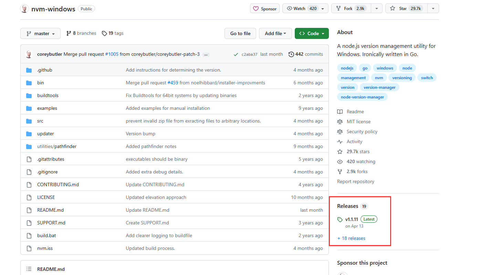

nvm的安装以及使用
1. nvm的安装
windows
参考链接: https://github.com/coreybutler/nvm-windows
位置如图：

Linux and MacOS
参考链接: https://github.com/nvm-sh/nvm
可以执行脚本：curl -o- https://raw.githubusercontent.com/nvm-sh/nvm/v0.39.4/install.sh | bash
或者
wget -qO- https://raw.githubusercontent.com/nvm-sh/nvm/v0.39.4/install.sh | bash
如果上么两个命令报错，也可以选择直接clone下来nvm-sh的代码然后执行install.sh脚本
2. 修改nvm镜像
windows
在nvm的安装目录下有个 setttings.txt 文件，打开文件后在文件末尾增加两行
node_mirror: https://npm.taobao.org/mirrors/node/
npm_mirror: https://npm.taobao.org/mirrors/npm/
Linux and MacOS
直接通过终端输入
// nvm node_mirror [url] 有则修改，无则获取
nvm node_mirror https://npm.taobao.org/mirrors/node/
// nvm npm_mirror [url] 有则修改，无则获取
nvm npm_mirror: https://npm.taobao.org/mirrors/npm/
常用镜像源
npm --------------------- https://registry.npmjs.org/
yarn -------------------- https://registry.yarnpkg.com/
tencent ----------------- https://mirrors.cloud.tencent.com/npm/
cnpm -------------------- https://r.cnpmjs.org/
taobao ------------------ https://registry.npmmirror.com/
npmMirror --------------- https://skimdb.npmjs.com/registry/